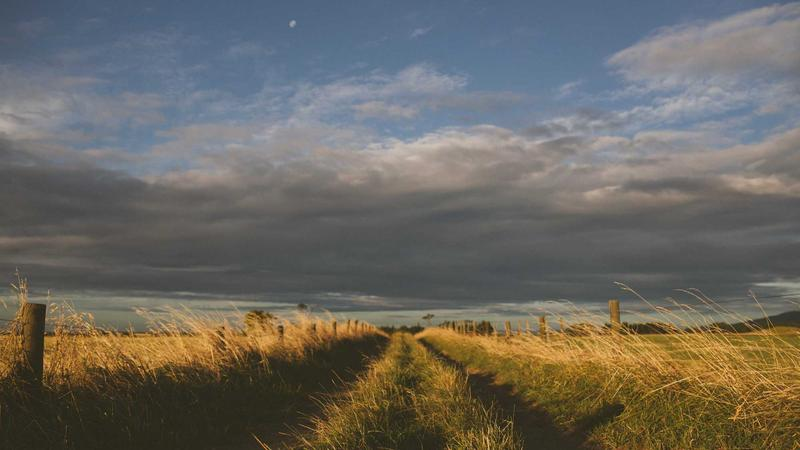

광양 철강 기지, 반도체·우주 소재 산실로 대변신

수십 년간 철강 도시로 이름을 날린 전남 광양이 반도체 소재와 우주항공 소재를 아우르는 첨단 소재 산업 거점으로 빠르게 변신하고 있다. 포스코 광양제철소를 중심으로 한 산업 생태계가 기존 철강 일변도에서 벗어나 복합 소재 클러스터로의 전환을 본격화하는 모양새다.
포스코홀딩스의 소재 계열사들은 광양 부지를 활용해 반도체용 특수 가스, 고순도 금속 소재, 우주 발사체 및 위성 구조재에 사용되는 탄소복합소재 등의 생산 시설을 순차적으로 확충하고 있다. 우주 소재 분야의 경우 한국형 발사체 '누리호' 사업을 통해 국내 수요 기반이 마련된 점이 광양 생산 확대의 촉매가 됐다.
반도체 소재 측면에서는 포스코퓨처엠이 광양 단지 내 음극재 및 양극재 생산라인을 운영 중이며, 추가 증설을 통해 2027년까지 생산 능력을 현재의 2배 수준으로 끌어올릴 계획이다. 특히 차세대 전고체 배터리용 황화물계 전해질 소재 개발에도 광양 R&D 인프라가 활용되고 있다.
광양시는 이 같은 변화를 제도적으로 뒷받침하기 위해 '첨단 소재 특화단지' 지정을 산업통상자원부에 신청했다. 특화단지로 지정될 경우 인허가 간소화, 규제 샌드박스 적용, 세제 혜택 등이 주어지며 기업들의 추가 투자 유입이 가속화될 것으로 기대된다.
우주 소재 분야에서는 광양을 거점으로 하는 기업들이 한국항공우주연구원(KARI)과의 협력 프로그램에 참여하며 기술 수준을 빠르게 끌어올리고 있다. 발사체 1단 추진제 탱크용 알루미늄-리튬 합금 및 탄소섬유강화복합재(CFRP) 등이 핵심 개발 대상으로, 현재 국산화율은 약 40% 수준에서 2030년까지 70% 이상으로 끌어올리는 것이 목표다.
업계 관계자는 '광양은 기존 철강 공정에서 파생된 고순도 금속 정련 기술과 대형 설비 운용 노하우를 보유하고 있어, 이를 반도체·우주 소재 쪽으로 응용하는 데 유리한 환경'이라고 설명했다. 또 '항만 인프라가 잘 갖춰져 있어 대형 소재·장비의 물류 이동에서도 강점을 가진다'고 덧붙였다.
지역 경제 파급 효과도 주목된다. 철강 경기 침체로 인한 지역 고용 위기를 첨단 소재 산업 육성을 통해 보완하는 전략이 현실화되고 있기 때문이다. 광양시는 2030년까지 첨단 소재 관련 기업 50개사 유치 및 신규 고용 3,000명 창출을 목표로 제시했다.
글로벌 경쟁 환경도 광양의 변신을 재촉하고 있다. 미국과 유럽이 중국 의존도를 낮추기 위한 핵심 소재 공급망 재편에 나서면서 한국산 첨단 소재에 대한 수요가 구조적으로 증가하는 흐름이다. 광양에서 생산되는 소재들이 이 같은 글로벌 공급망 재편의 수혜를 누릴 수 있다는 분석이 나온다.
정부 차원에서는 '소재·부품·장비 2.0 전략'의 일환으로 광양을 포함한 지역 소재 클러스터 육성에 재정 지원을 확대하고 있다. 국가첨단전략산업 특별법 적용 대상에 반도체 소재를 포함시키는 방향으로 법령 개정도 추진 중이어서, 광양 소재 단지의 법적 보호막도 두터워질 전망이다.
전문가들은 광양의 전략적 가치가 앞으로 더욱 높아질 것으로 내다본다. 철강 공정에서 확보된 야금(금속을 다루는 기술) 노하우가 반도체용 특수 금속 정련 및 우주 소재 개발에 직접 응용 가능한 만큼, 기존 산업 자산을 레버리지로 활용하는 성공적인 산업 전환 사례가 될 수 있다는 평가가 지배적이다.
향후 광양 첨단 소재 클러스터가 완성되면 국내 반도체·우주항공 산업의 공급망 자립도를 높이는 핵심 축이 될 것으로 기대된다. 민관이 합심해 추진하는 이번 산업 전환 프로젝트의 성패는 안정적인 수요처 확보와 R&D 인재 유입 여부에 달려 있다는 것이 업계의 공통된 시각이다.